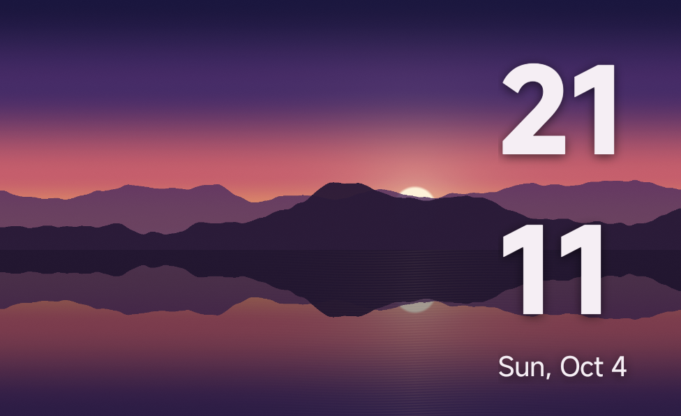
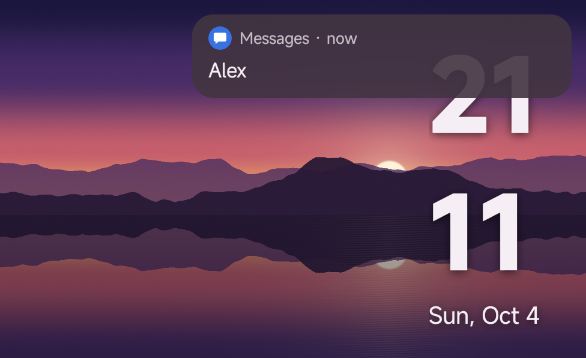
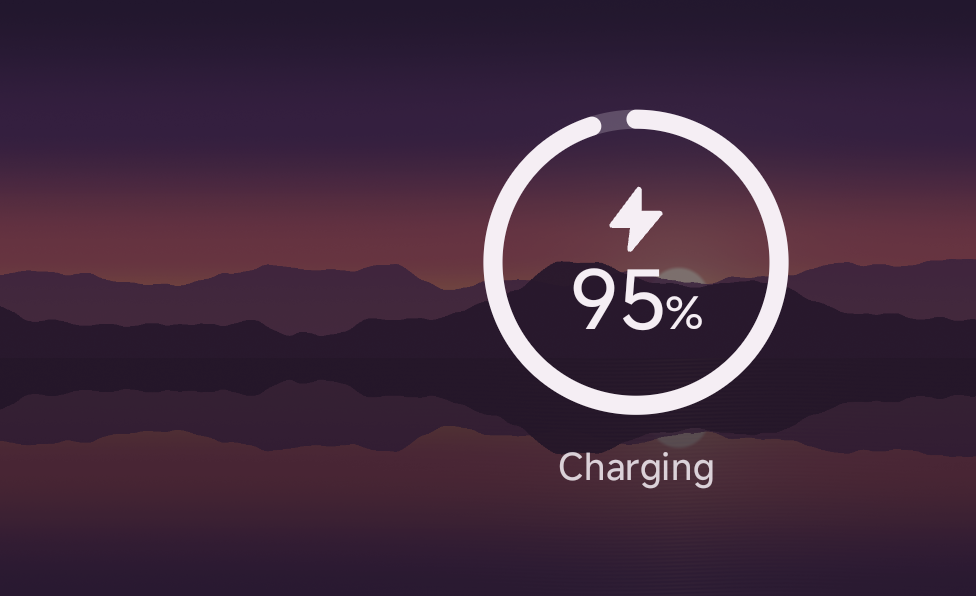
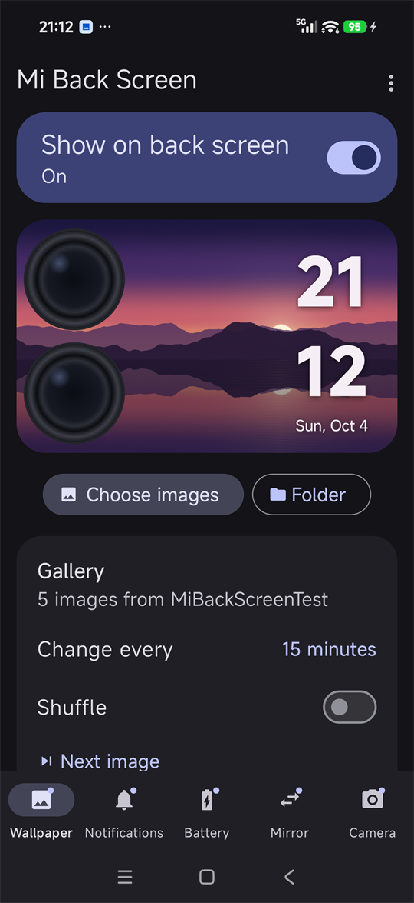
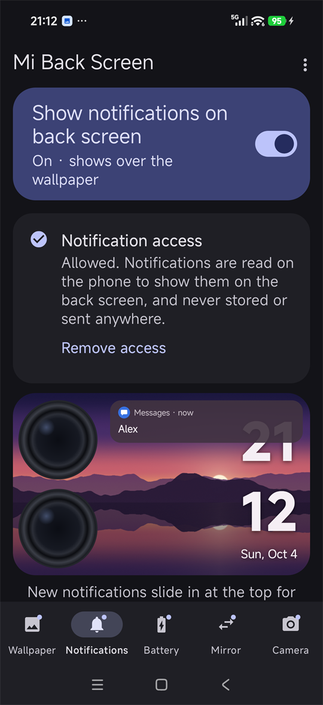
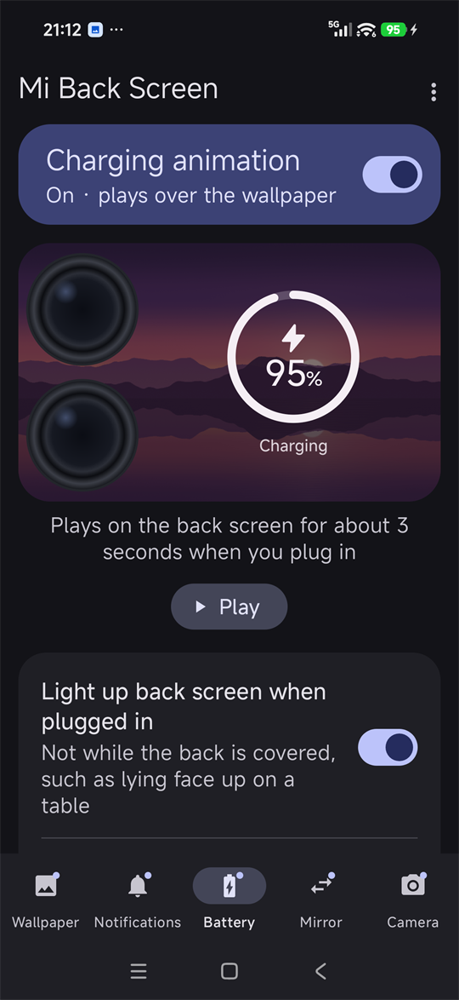
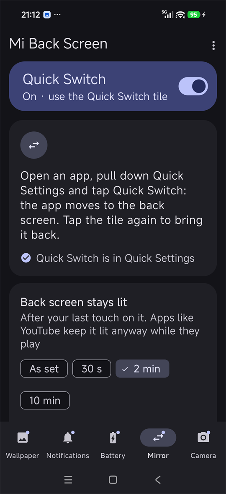
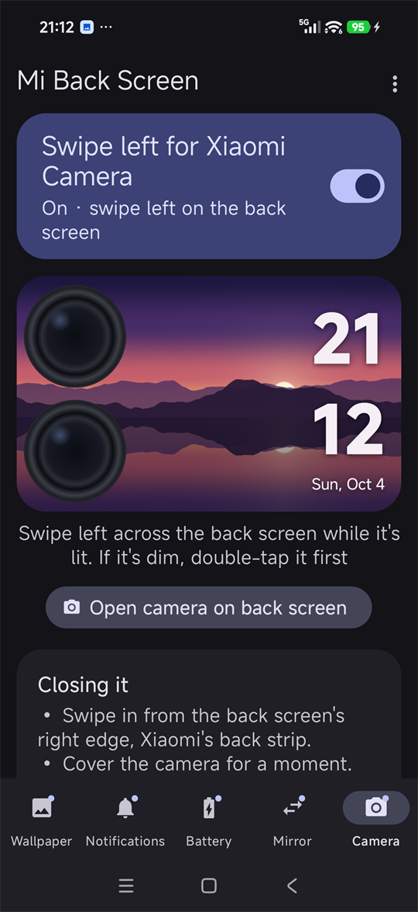

Five things, one back screen.
HyperOS only lets you choose from Xiaomi's own back-screen styles. Mi Back Screen puts whatever you like there, and adds what Xiaomi's screen doesn't do. Each section has its own switch, so turn on only what you want.
Images, GIFs and galleries
Choose one image or several, or point it at a folder, and it moves on to the next every few minutes or hours. GIFs loop. Images that don't fit the screen's shape can glide slowly across it, or stay still if they'd barely move. No images? It shows black, with the clock.
A clock that keeps time
The time and date over your wallpaper, in one of five styles, anywhere you drag it. It stays right while the phone sleeps, even on the dimmed back screen, and keeps clear of the camera.
Notifications
New ones slide in at the top, showing just the app, who it's from, or the message too: your choice. Pull down for the ones you haven't cleared. While locked, it follows your lock screen's privacy.
Charging animation
Plug in and the back screen lights up with the battery level, wired or wireless: a ring, a glow round the edge that stays faint while it charges, or a small bolt by the clock, in a colour from your wallpaper or one you pick.
Quick Switch
A Quick Settings tile moves the app you're using to the back screen, and brings it back. It stays lit as long as you choose, and apps can show smaller or upright. Xiaomi's settings are always put back.
Swipe for Xiaomi Camera
Swipe left on the wallpaper and Xiaomi Camera opens on the back screen, on the main cameras, locked or not. It closes with Xiaomi's back strip, by covering the camera, or when the screen dims.
Lit for as long as you like
Choose how long the back screen stays bright, keep it lit while you use the phone, and have it light up again when you pick the phone up after it went black on a table.
Tile, widget and schedules
Turn the wallpaper on or off from a Quick Settings tile or a home-screen widget, or at set times, such as off overnight. It comes back by itself after a restart, once Shizuku runs.
Private by design
No internet permission, no storage permission and no camera permission. Notification text is shown on the back screen and never stored or sent anywhere.
On the back screen, and in the app.
Captured on a Xiaomi 17 Pro Max. The back screen is landscape, with the cameras on the left; each tab's preview shows it the same way, shaped like the glass, over your own wallpaper. The ? at the top of each tab explains it.








Setup
HyperOS doesn't let normal apps draw on the rear display, so Mi Back Screen uses Shizuku to run a few shell commands on your behalf. You set it up once.
-
Install Shizuku
Get it from Google Play or GitHub, and start it using wireless debugging or from a computer with ADB. Shizuku's own guide walks you through it.
-
Install Mi Back Screen
Download the APK and open it. You may need to allow installing from your browser or file manager.
-
Allow access
Open Mi Back Screen and tap Allow access. If the prompt doesn't appear, open Shizuku → Authorized apps and switch Mi Back Screen on.
-
Pick an image and switch it on
Tap the preview to choose an image or GIF, then turn on Show on back screen. Add the tile or widget if you want a faster toggle.
-
Turn on the rest as you like
Notifications: switch it on and Shizuku allows Notification access in the same tap. Battery: switch on the charging animation. Mirror: switch on Quick Switch, allow notifications when asked, and tap Add Quick Switch to Quick Settings. Camera: switch on Swipe left for Xiaomi Camera; it works on the Mi Back Screen wallpaper. A dimmed back screen takes no touches, so double-tap it first.
Requirements
Built and tested on the Xiaomi 17 Pro Max. Other Xiaomi phones with a rear display may work, but aren't tested.
- PhoneXiaomi 17 Pro Max (rear display)
- SystemHyperOS, Android 13 or newer
- HelperShizuku, running and authorised
- PermissionsForeground service; alarms and start-after-restart for schedules; alarms and a brief wake lock for the clock; notifications, for the one that brings an app back or closes the camera; Notification access only if you turn Notifications on. No internet, no storage, no camera.
FAQ
Short answers to what people usually ask.
What does Shizuku actually do here?
It runs a small, fixed set of shell commands: start the wallpaper screen on the rear display, move it or another app there and back, wake that display, list what's on it, restart Xiaomi's back screen app once when the wallpaper goes up, bring Xiaomi's launcher back when you switch off, allow Notification access, open and close Xiaomi Camera, set Xiaomi's back-screen timeout if you choose one, and change that timeout, size and rotation while an app is there, always putting them back. You can read every one of them in RearCommands.kt. Arguments are passed straight to the process, so nothing can be injected.
Can it read my messages?
Only if you turn Notifications on, which allows Notification access. The text is read on the phone, shown on the back screen in the style you choose, kept in memory only while the notification is in your shade, and never stored or sent anywhere. The app has no internet permission at all. Remove access on the Notifications tab takes it away again.
Why does a page appear on the main screen when the camera opens?
That's Xiaomi Camera's own page, the same one Xiaomi's back screen shows. It closes with the camera, and turns the main screen off after about 30 seconds. Mi Back Screen has no camera permission: Xiaomi Camera takes the photos and saves them to Gallery as usual.
Do I need to re-start Shizuku after a reboot?
Usually yes, unless your phone is rooted. That's a Shizuku limitation. Mi Back Screen waits for it, saying On · waiting for Shizuku, and once Shizuku is running again it picks up where it left off.
Does it drain the battery?
Very little. The service sleeps until the rear display changes state, and only puts the wallpaper back if something closed it. With the clock on, the phone wakes for a moment each minute while the back screen is lit or dimmed, as always-on displays do, but not while it's off. Measured over an hour locked with the clock on the dimmed back screen, that came to about 1.5 mAh, or 0.02% of the battery. Panning and GIFs only move while the back screen is lit; panning costs about 20 mAh per lit hour, so a longer Stays lit for, or Stay fully lit while unlocked, costs more. The charging animation lasts 3.5 seconds per plug-in, and a notification lights the back screen at most once a minute per app. The rear display itself uses power when lit, just as it does with Xiaomi's own wallpapers.
Why does the back screen stay black after the phone lay on its back?
Lying on its back, the back screen switches off. Once it has been dim for 90 seconds, or 5 minutes in the dark, Xiaomi leaves it off when you pick the phone up, until you double-tap it. Light up when you pick it up, on the Wallpaper tab and on by default, lights it again as you pick the phone up, while it's unlocked.
Can I get rid of the "Mi Back Screen is on" notification?
Android requires one while an app works in the background, but you can switch it off. Swiped away, it stays away until it has something new to say, and Hide on it, or in Setup help, opens the switch to turn it off for good. The app carries on as before, and the notifications that bring an app back or close the camera still show.
My schedule didn't turn it on, or the clock is late. Why?
HyperOS pauses apps in the background and holds back their alarms. Open Settings → Apps → Mi Back Screen, turn on Autostart and set Battery saver to No restrictions; the app shows a Setup needed card until you do. Shizuku also has to be running at the scheduled time.
Why is it not on the Play Store?
It depends on Xiaomi-specific behaviour and Shizuku, which isn't a good fit for the Play Store. The full source is on GitHub, so you can build it yourself if you prefer.
How do I build it from source?
Clone the repository and run ./gradlew assembleDebug with JDK 17 and the Android SDK installed. The APK lands in app/build/outputs/apk/debug/.